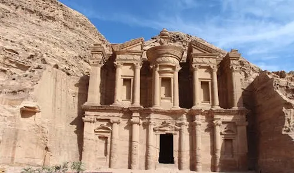
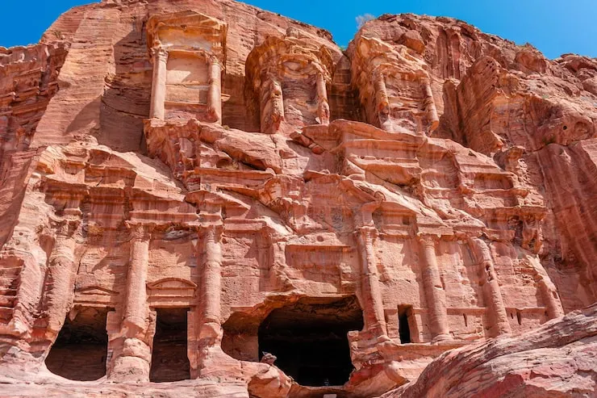
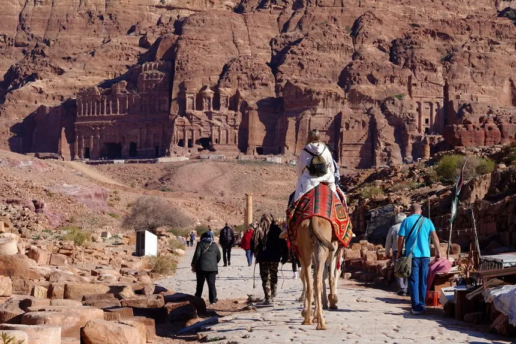

Petra (Jordania)
Publicado por Ignacio Bruno en Octubre de 2025

Petra fue la capital del antiguo reino nabateo, tallada directamente en las montañas de arenisca del sur de Jordania. Su construcción data del siglo VI a.C. y destaca por sus impresionantes fachadas como “El Tesoro” y “El Monasterio”.
Conocida como “la ciudad rosa”, Petra era un punto clave en las rutas comerciales entre Arabia, Egipto y Siria. En 1985 fue declarada Patrimonio de la Humanidad y es uno de los destinos arqueológicos más visitados del planeta.
Historia
Petra fue fundada por los nabateos, un pueblo árabe que prosperó gracias al comercio de incienso, especias y seda. Su ubicación estratégica entre importantes rutas comerciales permitió que la ciudad se desarrollara como un centro económico y cultural.
En el siglo II d.C., Petra fue anexada por el Imperio Romano, lo que marcó el comienzo de su declive. Con el paso del tiempo, los terremotos y el cambio de las rutas comerciales provocaron que la ciudad fuera abandonada y olvidada durante siglos, hasta que fue redescubierta en 1812 por el explorador suizo Johann Ludwig Burckhardt.
Arquitectura
Una de las características más sorprendentes de Petra es que gran parte de la ciudad está tallada directamente en la roca. Su color rosado cambia con la luz del sol, creando un paisaje único. Entre sus estructuras más conocidas se destacan “El Tesoro” (Al-Khazneh), con su imponente fachada helenística, y “El Monasterio” (Ad-Deir), uno de los templos más grandes del lugar.
Además, Petra cuenta con tumbas reales, templos, teatros y sistemas de canales que muestran el avanzado conocimiento hidráulico de los nabateos. Estos elementos demuestran la mezcla de influencias griegas, romanas y orientales que definieron su arquitectura.
Turismo
Actualmente, Petra es el principal destino turístico de Jordania y una de las Nuevas Siete Maravillas del Mundo Moderno. Los visitantes acceden a través del “Siq”, un estrecho desfiladero de más de un kilómetro que conduce directamente al majestuoso “Tesoro”.
Durante la noche, se ofrece el espectáculo “Petra by Night”, donde más de 1.500 velas iluminan el camino y las fachadas principales, creando una atmósfera mágica. Su combinación de historia, misterio y belleza natural convierte a Petra en una experiencia inolvidable.
